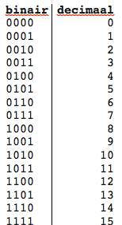

Een computer rekent met maar twee cijfers: 0 en 1. Elke plek in het getal heeft een eigen waarde.
| 128 | 64 | 32 | 16 | 8 | 4 | 2 | 1 |
|---|---|---|---|---|---|---|---|
| 0 | 0 | 0 | 0 | 1 | 1 | 0 | 1 |
8 + 4 + 1 = 13, dus 00001101 is het getal 13.

Op een harde schijf staan miljoenen magneetjes die aan of uit staan.
1 bit is 1 magneetje: aan (1) of uit (0). 8 bits samen zijn 1 byte. Met 8 bits kun je 28 = 256 verschillende waardes opslaan. Binaire getallen schrijf je altijd in groepjes van 4, dus 0000 1101.
0000 1101
Ik heb een paar levels van dit spel gespeeld om binair te oefenen. Speel zelf mee: